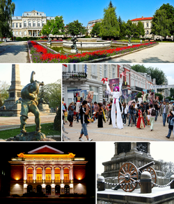
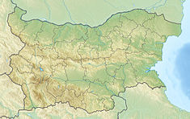

 Русе е голям пристанищен град по поречието на река Дунав в Североизточна България. Той е административен и стопански център на едноименните община Русе и област Русе. Градът е важен транспортен, икономически и културен център в Северна България и с население от 148 350 жители (преброяване на НСИ 2013) е петият по големина град в страната и вторият по големина в Северна България след Варна. В районa му се намират рафинерията Приста Ойл и Дунав мост, доскоро единственият мост на българо-румънската граница над река Дунав.
 Русе често е наричан Малката Виена заради архитектурните паметници, в които са застъпени стиловете необарок, модерн, неокласицизъм и сецесион. Тук се намират Пантеонът на възрожденците и Националният музей на транспорта.
test